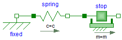
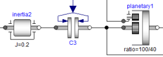
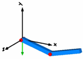
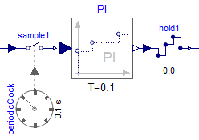
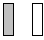

Modelica.UsersGuide
Modelica.UsersGuide
Modelica.UsersGuide
Modelica.UsersGuidePackage Modelica is a standardized and pre-defined package that is developed together with the Modelica language from the Modelica Association, see https://www.Modelica.org. It is also called Modelica Standard Library. It provides constants, types, connectors, partial models and model components in various disciplines.
This is a short User's Guide for the overall library. Some of the main sublibraries have their own User's Guides that can be accessed by the following links:
| ComplexBlocks | Library of basic input/output control blocks with Complex signals |
| Digital | Library for digital electrical components based on the VHDL standard (2-,3-,4-,9-valued logic) |
| Dissipation | Library of functions for convective heat transfer and pressure loss characteristics |
| Fluid | Library of 1-dim. thermo-fluid flow models using the Modelica.Media media description |
| FluidHeatFlow | Library of simple components for 1-dimensional incompressible thermo-fluid flow models |
| FluxTubes | Library for modelling of electromagnetic devices with lumped magnetic networks |
| FundamentalWave | Library for magnetic fundamental wave effects in electric machines |
| FundamentalWave | Library for quasi-static fundamental wave electric machines |
| Machines | Library for electric machines |
| Media | Library of media property models |
| MultiBody | Library to model 3-dimensional mechanical systems |
| Polyphase | Library for electrical components of one or more phases |
| PowerConverters | Library for rectifiers, inverters and DC/DC converters |
| QuasiStatic | Library for quasi-static electrical single-phase and polyphase AC simulation |
| Rotational | Library to model 1-dimensional, rotational mechanical systems |
| Spice3 | Library for components of the Berkeley SPICE3 simulator |
| StateGraph | Library to model discrete event and reactive systems by hierarchical state machines |
| Translational | Library to model 1-dimensional, translational mechanical systems |
| Units | Library of type definitions |
| Utilities | Library of utility functions especially for scripting (Files, Streams, Strings, System) |
Extends from Modelica.Icons.Information (Icon for general information packages).
| Name | Description |
|---|---|
| Overview of Modelica Library | |
| Connectors | |
| Conventions | |
| ReleaseNotes | Release notes |
| Contact |
Modelica.UsersGuide.OverviewThe Modelica Standard Library consists of the following main sub-libraries:
| Library Components | Description |
|---|---|

|
Analog Analog electric and electronic components, such as resistor, capacitor, transformers, diodes, transistors, transmission lines, switches, sources, sensors. |

|
Digital Digital electrical components based on the VHDL standard, like basic logic blocks with 9-value logic, delays, gates, sources, converters between 2-, 3-, 4-, and 9-valued logic. |

|
Machines Electrical asynchronous-, synchronous-, and DC-machines (motors and generators) as well as three-phase transformers. |

|
FluxTubes Based on magnetic flux tubes concepts. Especially to model electromagnetic actuators. Nonlinear shape, force, leakage, and material models. Material data for steel, electric sheet, pure iron, Cobalt iron, Nickel iron, NdFeB, Sm2Co17, and more. |
|  |
Translational 1-dim. mechanical, translational systems, e.g., sliding mass, mass with stops, spring, damper. |
|  |
Rotational 1-dim. mechanical, rotational systems, e.g., inertias, gears, planetary gears, convenient definition of speed/torque dependent friction (clutches, brakes, bearings, ..) |
  |
MultiBody 3-dim. mechanical systems consisting of joints, bodies, force and sensor elements. Joints can be driven by drive trains defined by 1-dim. mechanical system library (Rotational). Every component has a default animation. Components can be arbitrarily connected together. |

|
Fluid 1-dim. thermo-fluid flow in networks of vessels, pipes, fluid machines, valves and fittings. All media from the Modelica.Media library can be used (so incompressible or compressible, single or multiple substance, one or two phase medium). |

|
Media Large media library providing models and functions to compute media properties, such as h = h(p,T), d = d(p,T), for the following media:
|

|
FluidHeatFlow, HeatTransfer Simple thermo-fluid pipe flow, especially to model cooling of machines with air or water (pipes, pumps, valves, ambient, sensors, sources) and lumped heat transfer with heat capacitors, thermal conductors, convection, body radiation, sources and sensors. |
 
|
Blocks Input/output blocks to model block diagrams and logical networks, e.g., integrator, PI, PID, transfer function, linear state space system, sampler, unit delay, discrete transfer function, and/or blocks, timer, hysteresis, nonlinear and routing blocks, sources, tables. |
|  |
Clocked Blocks to precisely define and synchronize sampled data systems with different sampling rates. Continuous-time equations can be automatically discretized and utilized in a sampled data system. The library is based on the clocked synchronous language elements introduced in Modelica 3.3. |

|
StateGraph Hierarchical state machines with a similar modeling power as Statecharts. Modelica is used as synchronous action language, i.e., deterministic behavior is guaranteed |
|
Math,
Utilities Functions operating on vectors and matrices, such as for solving linear systems, eigen and singular values etc., and functions operating on strings, streams, files, e.g., to copy and remove a file or sort a vector of strings. |
Extends from Modelica.Icons.Information (Icon for general information packages).
Modelica.UsersGuide.ConnectorsThe Modelica standard library defines the most important elementary connectors in various domains. If any possible, a user should utilize these connectors in order that components from the Modelica Standard Library and from other libraries can be combined without problems. The following elementary connectors are defined (the meaning of potential, flow, and stream variables is explained in section "Connector Equations" below):
| domain | potential variables |
flow variables |
stream variables |
connector definition | icons |
| electrical analog |
electrical potential | electrical current | Modelica.Electrical.Analog.Interfaces
Pin, PositivePin, NegativePin |
||
| electrical polyphase |
vector of electrical pins | Modelica.Electrical.Polyphase.Interfaces
Plug, PositivePlug, NegativePlug |
 | ||
| electrical space phasor |
2 electrical potentials | 2 electrical currents | Modelica.Electrical.Machines.Interfaces
SpacePhasor |
 | |
| quasi-static single-phase |
complex electrical potential | complex electrical current |
Modelica.Electrical.QuasiStatic.SinglePhase.Interfaces
Pin, PositivePin, NegativePin |
 | |
| quasi-static polyphase |
vector of quasi-static single-phase pins | Modelica.Electrical.QuasiStatic.Polyphase.Interfaces
Plug, PositivePlug, NegativePlug |
|||
| electrical digital |
Integer (1..9) | Modelica.Electrical.Digital.Interfaces
DigitalSignal, DigitalInput, DigitalOutput |
 | ||
| magnetic flux tubes |
magnetic potential | magnetic flux |
Modelica.Magnetic.FluxTubes.Interfaces
MagneticPort, PositiveMagneticPort, NegativeMagneticPort |
 | |
| magnetic fundamental wave |
complex magnetic potential | complex magnetic flux |
Modelica.Magnetic.FundamentalWave.Interfaces
MagneticPort, PositiveMagneticPort, NegativeMagneticPort |
 | |
| translational | distance | cut-force | Modelica.Mechanics.Translational.Interfaces
Flange_a, Flange_b |
||
| rotational | angle | cut-torque | Modelica.Mechanics.Rotational.Interfaces
Flange_a, Flange_b |
 | |
| 3-dim. mechanics |
position vector orientation object |
cut-force vector cut-torque vector |
Modelica.Mechanics.MultiBody.Interfaces
Frame, Frame_a, Frame_b, Frame_resolve |
 | |
| simple fluid flow |
pressure specific enthalpy |
mass flow rate enthalpy flow rate |
Modelica.Thermal.FluidHeatFlow.Interfaces
FlowPort, FlowPort_a, FlowPort_b |
 | |
| thermo fluid flow |
pressure | mass flow rate | specific enthalpy mass fractions |
Modelica.Fluid.Interfaces
FluidPort, FluidPort_a, FluidPort_b |
 |
| heat transfer |
temperature | heat flow rate | Modelica.Thermal.HeatTransfer.Interfaces
HeatPort, HeatPort_a, HeatPort_b |
 | |
| blocks |
Real variable Integer variable Boolean variable |
Modelica.Blocks.Interfaces
RealSignal, RealInput, RealOutput IntegerSignal, IntegerInput, IntegerOutput BooleanSignal, BooleanInput, BooleanOutput |
 | ||
| complex blocks |
Complex variable | Modelica.ComplexBlocks.Interfaces
ComplexSignal, ComplexInput, ComplexOutput |
|||
| state machine |
Boolean variables (occupied, set, available, reset) |
Modelica.StateGraph.Interfaces
Step_in, Step_out, Transition_in, Transition_out |
 | ||
In all domains, usually 2 connectors are defined. The variable declarations are identical, only the icons are different in order that it is easy to distinguish connectors of the same domain that are attached at the same component.
Modelica supports also hierarchical connectors, in a similar way as hierarchical models. As a result, it is, e.g., possible, to collect elementary connectors together. For example, an electrical plug consisting of two electrical pins can be defined as:
connector Plug import Modelica.Electrical.Analog.Interfaces; Interfaces.PositivePin phase; Interfaces.NegativePin ground; end Plug;
With one connect(..) equation, either two plugs can be connected (and therefore implicitly also the phase and ground pins) or a Pin connector can be directly connected to the phase or ground of a Plug connector, such as "connect(resistor.p, plug.phase)".
The connector variables listed above have been basically determined with the following strategy:
The Modelica connection semantics is sketched at hand of an example: Three connectors c1, c2, c3 with the definition
connector Demo Real p; // potential variable flow Real f; // flow variable stream Real s; // stream variable end Demo;
are connected together with
connect(c1,c2); connect(c1,c3);
then this leads to the following equations:
// Potential variables are identical
c1.p = c2.p;
c1.p = c3.p;
// The sum of the flow variables is zero
0 = c1.f + c2.f + c3.f;
/* The sum of the product of flow variables and upstream stream variables is zero
(this implicit set of equations is explicitly solved when generating code;
the "<undefined>" parts are defined in such a way that
inStream(..) is continuous).
*/
0 = c1.f*(if c1.f > 0 then s_mix else c1.s) +
c2.f*(if c2.f > 0 then s_mix else c2.s) +
c3.f*(if c3.f > 0 then s_mix else c3.s);
inStream(c1.s) = if c1.f > 0 then s_mix else <undefined>;
inStream(c2.s) = if c2.f > 0 then s_mix else <undefined>;
inStream(c3.s) = if c3.f > 0 then s_mix else <undefined>;
Extends from Modelica.Icons.Information (Icon for general information packages).
 Modelica.UsersGuide.Contact
Modelica.UsersGuide.ContactSince end of 2007, the development of the sublibraries of package Modelica is organized by personal and/or organizational library officers assigned by the Modelica Association. They are responsible for the maintenance and for the further organization of the development. Other persons may also contribute, but the final decision for library improvements and/or changes is performed by the responsible library officer(s). In order that a new sublibrary or a new version of a sublibrary is ready to be released, the responsible library officers report the changes to the members of the Modelica Association and the library is made available for beta testing to interested parties before a final decision. A new release of a sublibrary is formally decided by voting of the Modelica Association members.
As of March 7th, 2020, the following library officers are assigned:
| Sublibraries | Library officers |
| UsersGuide | Christian Kral, Jakub Tobolar |
| Blocks | Martin Otter, Anton Haumer |
| Clocked | Christoff Bürger, Bernhard Thiele |
| ComplexBlocks | Anton Haumer, Christian Kral |
| Blocks.Tables | Thomas Beutlich, Martin Otter, Anton Haumer |
| StateGraph | Hans Olsson, Martin Otter |
| Electrical.Analog | Christoph Clauss, Anton Haumer, Christian Kral, Kristin Majetta |
| Electrical.Batteries | Anton Haumer, Christian Kral |
| Electrical.Digital | Christoph Clauss, Kristin Majetta |
| Electrical.Machines | Anton Haumer, Christian Kral |
| Electrical.Polyphase | Anton Haumer, Christian Kral |
| Electrical.PowerConverters | Christian Kral, Anton Haumer |
| Electrical.QuasiStatic | Anton Haumer, Christian Kral |
| Electrical.Spice3 | Christoph Clauss, Kristin Majetta, Joe Riel |
| Magnetic.FluxTubes | Thomas Bödrich, Anton Haumer, Christian Kral, Johannes Ziske |
| Magnetic.FundamentalWave | Anton Haumer, Christian Kral |
| Magnetic.QuasiStatic | Anton Haumer, Christian Kral |
| Mechanics.MultiBody | Martin Otter, Jakub Tobolar |
| Mechanics.Rotational | Anton Haumer, Christian Kral, Martin Otter, Jakub Tobolar |
| Mechanics.Translational | Anton Haumer, Christian Kral, Martin Otter, Jakub Tobolar |
| Fluid | Francesco Casella, Rüdiger Franke, Hubertus Tummescheit |
| Fluid.Dissipation | Francesco Casella, Stefan Wischhusen |
| Media | Francesco Casella, Rüdiger Franke, Hubertus Tummescheit |
| Thermal.FluidHeatFlow | Anton Haumer, Christian Kral |
| Thermal.HeatTransfer | Anton Haumer, Christian Kral |
| Math | Hans Olsson, Martin Otter |
| ComplexMath | Anton Haumer, Christian Kral, Martin Otter |
| Utilities | Dag Brück, Hans Olsson, Martin Otter |
| Constants | Hans Olsson, Martin Otter |
| Icons | Christian Kral, Jakub Tobolar |
| Units | Christian Kral, Martin Otter |
| C-Sources | Thomas Beutlich, Hans Olsson, Martin Sjölund |
| Reference | Hans Olsson, Dietmar Winkler |
| Services | Hans Olsson, Martin Otter |
| Complex | Anton Haumer, Christian Kral |
| Test | Leo Gall, Martin Otter |
| TestOverdetermined | Leo Gall, Martin Otter |
| TestConversion4 | Leo Gall, Martin Otter |
| ObsoleteModelica4 | Hans Olsson, Martin Otter |
The following people have directly contributed to the implementation of the Modelica package (many more people have contributed to the design):
| Marcus Baur | previously at: Institute of System Dynamics and Control DLR, German Aerospace Center, Oberpfaffenhofen, Germany |
Complex Modelica.Math.Vectors Modelica.Math.Matrices |
| Peter Beater | University of Paderborn, Germany | Modelica.Mechanics.Translational |
| Thomas Beutlich | previously at: ESI ITI GmbH, Germany |
Modelica.Blocks.Sources.CombiTimeTable Modelica.Blocks.Tables |
| Thomas Bödrich | Dresden University of Technology, Germany | Modelica.Magnetic.FluxTubes |
| Dag Brück | Dassault Systèmes AB, Lund, Sweden | Modelica.Utilities |
| Francesco Casella | Politecnico di Milano, Milano, Italy | Modelica.Fluid Modelica.Media |
| Christoph Clauss | until 2016: Fraunhofer Institute for Integrated Circuits, Dresden, Germany |
Modelica.Electrical.Analog Modelica.Electrical.Digital Modelica.Electrical.Spice3 |
| Jonas Eborn | Modelon AB, Lund, Sweden | Modelica.Media |
| Hilding Elmqvist | Mogram AB, Lund, Sweden until 2015: Dassault Systèmes AB, Lund, Sweden |
Modelica.Mechanics.MultiBody Modelica.Fluid Modelica.Media Modelica.StateGraph Modelica.Utilities Conversion from 1.6 to 2.0 |
| Rüdiger Franke | ABB Corporate Research, Ladenburg, Germany |
Modelica.Fluid Modelica.Media |
| Manuel Gräber | Institut für Thermodynamik, Technische Universität Braunschweig, Germany |
Modelica.Fluid |
| Anton Haumer | Consultant, Regensburg, Germany |
Modelica.ComplexBlocks Modelica.Electrical.Machines Modelica.Electrical.Polyphase Modelica.Electrical.QuasiStatic Modelica.Magnetics.FundamentalWave Modelica.Mechanics.Rotational Modelica.Mechanics.Translational Modelica.Thermal.FluidHeatFlow Modelica.Thermal.HeatTransfer Modelica.ComplexMath Conversion from 1.6 to 2.0 Conversion from 2.2 to 3.0 |
| Hans-Dieter Joos | previously at: Institute of System Dynamics and Control DLR, German Aerospace Center, Oberpfaffenhofen, Germany |
Modelica.Math.Matrices |
| Christian Kral | Modeling and Simulation of Electric Machines, Drives and Mechatronic Systems, Vienna, Austria |
Modelica.ComplexBlocks Modelica.Electrical.Machines Modelica.Electrical.Polyphase Modelica.Electrical.QuasiStatic Modelica.Magnetics.FundamentalWave Modelica.Mechanics.Rotational Modelica.Mechanics.Translational Modelica.Thermal.FluidHeatFlow Modelica.Thermal.HeatTransfer Modelica.ComplexMath |
| Sven Erik Mattsson | until 2015: Dassault Systèmes AB, Lund, Sweden |
Modelica.Mechanics.MultiBody |
| Hans Olsson | Dassault Systèmes AB, Lund, Sweden | Modelica.Blocks Modelica.Math.Matrices Modelica.Utilities Conversion from 1.6 to 2.0 Conversion from 2.2 to 3.0 |
| Martin Otter | Institute of System Dynamics and Control DLR, German Aerospace Center, Oberpfaffenhofen, Germany |
Complex Modelica.Blocks Modelica.Fluid Modelica.Mechanics.MultiBody Modelica.Mechanics.Rotational Modelica.Mechanics.Translational Modelica.Math Modelica.ComplexMath Modelica.Media Modelica.SIunits Modelica.StateGraph Modelica.Thermal.HeatTransfer Modelica.Utilities ModelicaReference Conversion from 1.6 to 2.0 Conversion from 2.2 to 3.0 |
| Katrin Prölß | previously at: Modelon Deutschland GmbH, Hamburg, Germany until 2008: Department of Technical Thermodynamics, Technical University Hamburg-Harburg, Germany |
Modelica.Fluid Modelica.Media |
| Christoph C. Richter | until 2009: Institut für Thermodynamik, Technische Universität Braunschweig, Germany |
Modelica.Fluid Modelica.Media |
| André Schneider | Fraunhofer Institute for Integrated Circuits, Dresden, Germany |
Modelica.Electrical.Analog Modelica.Electrical.Digital |
| Christian Schweiger | until 2006: Institute of System Dynamics and Control, DLR, German Aerospace Center, Oberpfaffenhofen, Germany |
Modelica.Mechanics.Rotational ModelicaReference Conversion from 1.6 to 2.0 |
| Michael Sielemann | Modelon Deutschland GmbH, Munich, Germany previously at: Institute of System Dynamics and Control DLR, German Aerospace Center, Oberpfaffenhofen, Germany |
Modelica.Fluid Modelica.Media |
| Michael Tiller | JuliaHub previously at: Xogeny Inc., Canton, MI, U.S.A. previously at: Emmeskay, Inc., Dearborn, MI, U.S.A. previously at: Ford Motor Company, Dearborn, MI, U.S.A. |
Modelica.Media Modelica.Thermal.HeatTransfer |
| Hubertus Tummescheit | previously at: Modelon, Inc., Hartford, CT, U.S.A. |
Modelica.Media Modelica.Thermal.HeatTransfer |
| Thorsten Vahlenkamp | until 2010: XRG Simulation GmbH, Hamburg, Germany |
Modelica.Fluid.Dissipation |
| Nico Walter | Master thesis at HTWK Leipzig (Prof. R. Müller) and DLR Oberpfaffenhofen, Germany |
Modelica.Math.Matrices |
| Michael Wetter | Lawrence Berkeley National Laboratory, Berkeley, CA, U.S.A. | Modelica.Fluid |
| Hans-Jürg Wiesmann | Switzerland | Modelica.ComplexMath |
| Stefan Wischhusen | XRG Simulation GmbH, Hamburg, Germany | Modelica.Fluid.Dissipation Modelica.Media |
Extends from Modelica.Icons.Contact (Icon for contact information).
Automatically generated Tue Feb 24 16:58:53 2026.